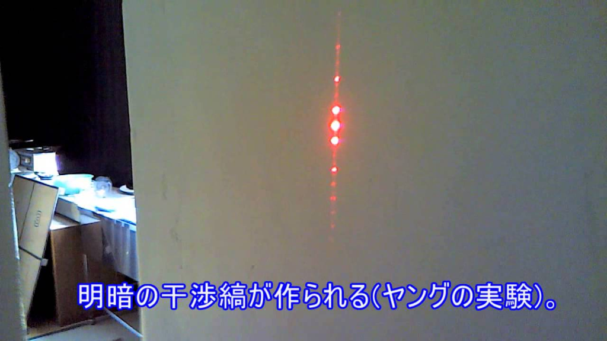

光の正体は「つぶ」か「なみ」か？
私たちが普段見ている「光」は、一体何でできているのでしょうか？
昔の科学者たちは、光が「ちいさなつぶ（粒子）」なのか、それとも「水面のように広がるなみ（波）」なのか、長年研究を続けてきました。
「つぶ」を２つのすきまに投げると？
もしも光が「ちいさなつぶ（テニスボール）」だとしたら、２つの縦に細長いすきま（スリット）がある壁に向かってたくさん投げたとき、その奥にある壁にはどんな模様ができるでしょうか？
つぶの動きを観察しよう
下の実験装置で「通常スピード」や「早送り」ボタンを押して、つぶが飛ぶ様子を見てみましょう！
奥の壁にはどんな模様ができるでしょうか？
クイズの正解：A. すきまと同じ「２本の縦線」の模様になる
つぶはまっすぐ飛ぶので、すきまを通り抜けたものだけがまっすぐ奥の壁に当たります。だから、すきまの形と同じ２本の縦線がくっきりと浮かび上がります。
実験のまとめ：２本線の山になった！
つぶ（粒子）の性質だけを持っているものは、すきまの奥で重なり合ってもお互いに影響しないため、それぞれのすきまの奥に１つずつ、合わせて２つの山（オレンジ色のグラフ）を作ります。
波の「まわりこみ」と「かさなりあい」
波には、つぶ（粒子）とは異なる２つの性質があります。
① まわりこみ（回折 - かいせつ）
波がせまいすきまを通ると、そこを中心にして、まるで扇風機のように丸く広がって進んでいきます。
② かさなりあい（干渉 - かんしょう）
２つの丸い波が出会うと、波の「山と山」が重なる場所はもっと高い波（明るい）になり、「山と谷」が重なる場所は平らになって消えます（暗い）。
「なみ」を２つのすきまに通すと？
もしも光が「水面の波（なみ）」だとしたら、２本のスリットを通り抜けたあとに重なり合うことで、奥の壁にはどんな模様ができるでしょうか？
波の重なりを観察しよう
下の実験装置で波が伝わっていく様子を見てみましょう！
２つのすきまから広がった波がぶつかり合って、きれいな「しましま模様」（青色のグラフ）ができるのを確認しましょう！
クイズの正解：B. 明るい所と暗い所が交互にならぶ「しましま模様」になる
２つのすきまから扇状に広がった波がお互いに重なり合い、強め合う場所（明るい）と弱め合う場所（暗い）が交互に生まれるため、美しい【しましま模様】が浮かび上がります。これを物理の言葉で【干渉縞（かんしょうじま）】と呼びます。
光の波としての性質：ヤングの実験
今から約200年前、イギリスの科学者トーマス・ヤングが光を使った２本すきま（ダブルスリット）実験を行いました。
その結果、壁には見事な「しましま模様（干渉縞）」が現れました。
この実験によって「光は波の性質を持っている」ことが確かめられ、現在でも【ヤングの実験】として広く知られています。

実際のレーザー光を使ったヤングの実験結果（赤い光が縦に並ぶ干渉縞が確認できます）
画像引用元: YouTube (1bCGSPpHQBY)
現代物理学の不思議な現象
「光は波である」と確かめられた後、科学技術が進歩し、光を「完全に１粒ずつ」発射する実験ができるようになりました。つぶを1つずつ投げるのであれば、すきまをまっすぐ通り抜けて「２本の縦線」になるはずだと考えられていました。
ところが、何万回も記録を重ねていくと、驚くべきことに壁には波と同じ【しましま模様】が浮かび上がったのです。
下のシミュレーターで「早送り」を押して、１粒ずつ壁に当たった跡がたまっていったとき、どんな模様ができるか観察してみましょう！
１粒ずつ飛んでいるはずなのに、なぜ波のように「しましま模様」ができたのでしょうか？ １つのつぶが「２つのすきまを同時に通り抜けた」としか考えられないような、非常に不思議なふるまいです。これは【量子力学（りょうしりきがく）】と呼ばれる、現代物理学の重要なテーマの一つです。
すきまを「３つ」に増やすと、模様はどうなる？
すきまが２つのときは「しましま模様」ができましたね。
では、すきまを３つ（3重スリット）に増やすと、波はどう重なり合うでしょうか？
どんな模様ができるか、自由に想像してみんなで話し合ってみましょう！
解説：明るい線のとなりに「少し薄い明るい線」が並ぶ、複雑な模様になります！
3重スリットでは、３つのすきまから出た波が複雑に重なり合います。そのため、３つの波の山がぴったり重なる「超強力な明るい場所（主極大）」と、２つの波だけが重なる「少し薄い明るい場所（副極大）」が交互に現れ、強弱のある賑やかなしましま模様（ピンク色のグラフ）になります。
さらにシミュレーターをよく見ると、青色で光る「S字カーブ（ループ）」を描く不思議なつぶがたまに飛んでいます！ これは、すきまの間を行ったり来たりループする非常に珍しい軌道で、３本以上のすきまがあることで初めて起こる、最新の量子力学でも研究されている不思議なミステリーです。
光だけじゃない！？ どんどん大きくなる「波」の仲間たち
しましま模様（干渉縞）を作るのは「光」や「電子」のような極めて小さなものだけだと思われてきました。しかし科学が進歩するにつれて、より大きくて重いものでも、同じように波の性質を持つことが実験で確かめられています。
| 時期 | 実験の内容 | おおよその大きさ |
|---|---|---|
| 1801–1803年 | ヤングが光の干渉を示し、光の波の性質が確かめられた。 | - |
| 1927年 | デイヴィソン＝ガーマーの実験により、電子（粒子）の干渉を確認。 | 0.0005 Da (電子1個分) |
| 1989年 | 外村彰らが1個ずつ電子を放出した場合の干渉縞を実証。 | 0.0005 Da (電子1個分) |
| 1999年 | フラーレン (C₆₀) 分子を用いた干渉実験に成功。 | 720 Da (原子60個分) |
| 2026年 | ナトリウム金属ナノ粒子の干渉が実証。（最近の大きなニュース！） | 1,000,000 Da (原子約43000個分) |
※「Da（ダルトン）」は小さなものの重さを表す単位です。最初の電子から比べると、最近ではなんと20億倍も重くて大きな粒で干渉縞を作れるようになっています！
第1問
２つのすきまから出た波の「山」と「谷」がぶつかって、お互いに打ち消し合って波が平らになった場所は、光としてはどうなるでしょう？
正解は「B. 暗くなる（黒い縞になる）」です！
波がお互いに打ち消し合う場所は、波の高さが０（平ら）になります。光の波が消えてエネルギーがなくなるため、暗い影になります。
第2問
ヤングの実験で、光が「なみ（波）」の性質を持っていることを証明するために使った壁の【すきま】の数はいくつでしょう？
正解は「B. ２つ（ダブルスリット）」です！
２つのすきまを通って広がった波が出会って重なり合うことで、はじめて干渉縞（しましま）を作ることができます。そのため、２つのすきまが必要でしたね！
第3問
3重スリット（3つのすきま）の実験では、光のつぶがどんな珍しい動きをすることがあるでしょう？
正解は「B. すきまの間をくるっと回る「S字ループ軌道」を描く」です！
3重スリットのシミュレーターでときどき青く光りながらカーブしていたのが、すきまを往復するループ光子です。つぶなのにまるで波のように全体をうろうろしてからスクリーンに到達する、量子力学のとても不思議な現象です。
ミッションクリア！
２本すきまと３本すきまの不思議な実験について、すべてのひみつを学ぶことができました！
光が波であることや、現代物理の不思議についてマスターした君は、もう立派な小さな物理学者です！